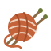

HAND-KNITTED MARKETPLACE

İlmek
Knitters open a shop, buyers order without signing up
An Express, EJS and Sequelize web app with a browser-side cart, mock checkout, seller shops, an album gallery and an admin panel.
her ilmekte bir emek var…
160 products8 categories72 checks